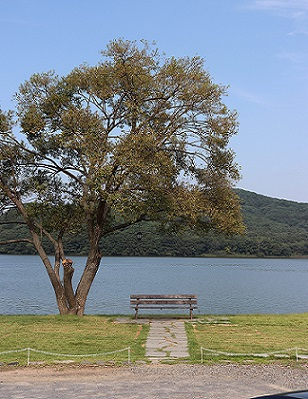
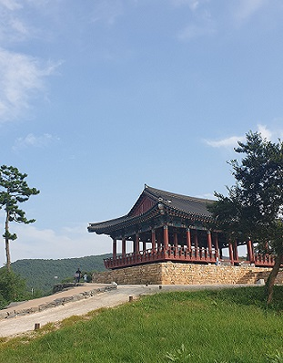
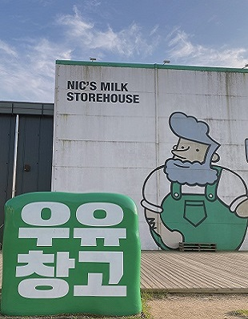

SERVICE
계획적인 여행 일정으로 당신의 눈을 사로잡겠습니다.

카페 블루레이크
매일 10:00 - 19:00 명절, 공휴일 정상영업
호숫가에 자리를 잡고 있는 아담한 카페이며
영화 결백 촬영지로 잘 알려져 있다.
카페는 야외 테이블과 내부를 같이 사용하며
내부는 생각보다 공간이 작았지만 채광이 참 좋았다.
나는 야외서 호수를 보며 커피 한 잔과 이야기를 나누면
좋을 것 같아 야외를 선택했으며 결과는 만족스러웠다.
사람이 많은 시간에 가면 나무와 사진 찍기 어려울 수 있으며 식사 시간 전에 가면 편하게 사진 찍을 수 있다.

충청수영객사
조선 초기 1509년 이장생의 주도로 서해를 통해 침입하는
적은 감시하고 물리치기 위해 축조한 성이고
조운선을 보호하며 1896년에 폐영이 되었다.
우리나라 5개 수군 영 중에 보존이 제일 잘 되어 있으며
국가사적 제501호로 지정되어 있다.
드라마 동백꽃 필 무렵 촬영 장소였으며 15~20분 이면 한 바퀴를 둘러볼 수 있어 식사 후 산책하기 좋은 코스이다.
나는 맑은 날씨에 나무와 바다의 조합이 매우 인상적이었으며 비가 오는 것을 좋아하지 않지만 좋은 분위기가 나올 것 같아 비 오는 날에도 한 번 와보고 싶다.

보령우유창고
매일 11:00 - 19:00 연중무휴
건초창고를 개조시킨 건물로 다양한 체험활동과 개화 목장을 운영하는 곳이다.
체험활동 종류는 목장 견학 아이스크림 만들기 버터 만들기 리코타 치즈 만들기로 구성이 되어있으며 13세 이하 어린이는 보호자 1인 동반 필수 예약은 인터넷에서 진행이 된다.
카페 뒤쪽은 잔디밭과 포토존이 있으며 안내 표지 판을 보면서 걷다 보면 목장을 구경 할 수 있다. 목장과 체험학습이 있어 어린 자녀를 둔 부모님들이 많이들 오시며 옆에 우유공장이 있어 신선한 우유로 만든 음료를 먹을 수 있다.